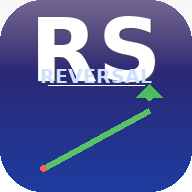

| # | الرمز | المرحلة | التقييم | السعر | التقسيم العكسي | صعود التقسيم | الهبوط | جلسات الثبات | RSI | الفلوت | بيع مكشوف | RVOL | نقطة الاختراق | مخاطرة/عائد | التسلسل | أبرز نموذج | |
|---|---|---|---|---|---|---|---|---|---|---|---|---|---|---|---|---|---|
| اضغط «مسح السوق الآن» لبدء الرصد… | |||||||||||||||||

| # | الرمز | المرحلة | التقييم | السعر | التقسيم العكسي | صعود التقسيم | الهبوط | جلسات الثبات | RSI | الفلوت | بيع مكشوف | RVOL | نقطة الاختراق | مخاطرة/عائد | التسلسل | أبرز نموذج | |
|---|---|---|---|---|---|---|---|---|---|---|---|---|---|---|---|---|---|
| اضغط «مسح السوق الآن» لبدء الرصد… | |||||||||||||||||
ستظهر هنا لوحة التحليل الفني الكاملة: المخطط (يومي / 4 ساعات)، دورة الحياة، المؤشرات، النماذج الفنية، البيانات الأساسية، الأخبار والمحفزات، ومستويات الدخول والوقف والأهداف.
الاستراتيجية تبحث عن سهم أُجري له تقسيم عكسي (1:2 حتى 1:60) خلال آخر شهرين، صعد صعوداً محدوداً يوم التقسيم، ثم دخل موجة هبوط قوية (≥30%، والمثالي 40-50%+) حتى وصل إلى تشبع بيعي (RSI < 30)، وكوّن قاعاً وثبت عليه 3-5 جلسات مع جفاف حجم، ثم ينطلق بنسبة ≈20% (أقل/أكثر قليلاً) لاختبار أقرب مقاومة، وبعدها يعود لاختبار الدعم الرئيسي أو يسحب سيولة تحته ويعود فوقه — وعندها فقط يتحوّل السهم إلى جاهز فنياً (اكتمال التسلسل).
التقييم مرجّح: كل مكوّن يُنقّط من 0 إلى 100 ثم يُضرب في وزنه، والمجموع يُقسم على مجموع الأوزان. الرموز بلا حدث تقسيم عكسي تُخفض نقاطها بنسبة 45%، وكسر القاع المرجعي يخفض النتيجة 20%، وفشل تسلسل الانعكاس يخفض «جودة المخاطر» 25%.
لتشغيل البيانات الحقيقية: عدّل RSS_DATA_MODE=live في ملف .env
(أو auto وهو مكافئ للوضع الحي دون أي تراجع للتجريبي)، ثم أعد تشغيل المخدم.